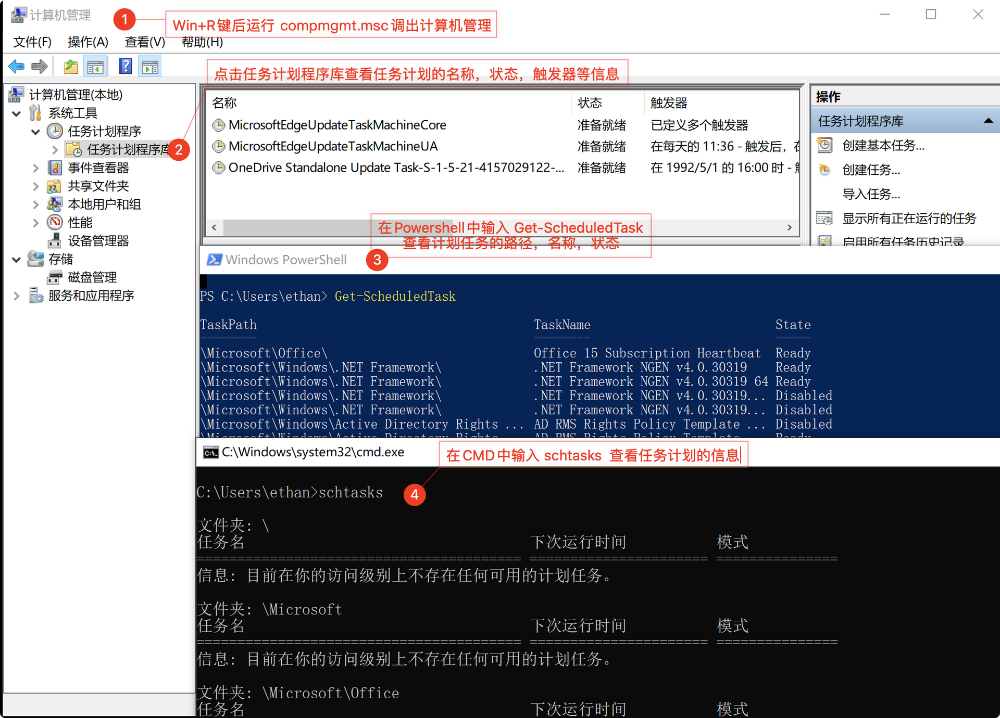

编写进度
勒索病毒(Rasomware) 是伴随数字货币星期的一种新型病毒木马，
机器一旦遭受勒索病毒攻击，将会使绝大多数文件被非对称加密算法和对称加密算法组合的方式进行篡改，并添加一个特殊后缀。
绝大大叔勒索病毒均无法通过技术手段解密，必须拿到对应的解密私钥才有可能无损还原加密文件。
常见的勒索病毒有WannaCry、GlobeImposter、Dharma等
Linux勒索病毒样本 GonnaCry
常用工具
勒索病毒搜索引擎
勒索病毒解密工具
- nomoreransom勒索软件解密工具集
- MalwareHunterTeam勒索软件解密工具集
- Github解密工具汇总
- 腾讯哈勃勒索软件专杀工具
- 趋势科技勒索病毒解密工具
- 金山毒霸勒索病毒免疫工具
- 火绒安全工具下载
- 瑞星解密工具下载
- 卡巴斯基免费勒索解密器
- Avast免费勒索软件解密工具
- Emsisoft免费勒索软件解密工具
初步预判
事件背景
xxxx年x月x日，x公司内网服务器遭遇勒索病毒。
应急响应工程师在抵达现场后，对包含服务器在的x台机器进行系统排查和日志分析。
确定内网多台服务器均感染xx勒索病毒，该公司多区，多台服务器重要数据均被加密。
中勒索病毒的特征：
- 业务系统无法访问(50%)
- 桌面新txt文件(60%)
- 文件后缀被篡改(80%)
- 勒索信展示(100%)
了解以下系统架构
- 网络拓扑、业务架构、服务器类型等信息
对感染主机分析的信息收集
- 系统名称、节点、主机名
- 物理机/虚拟机
- 操作系统及版本
- IP地址、开放端口
- 中间件及版本
- 数据库类型
- Web框架等
临时处置
针对已感染服务器
- 物理隔离
- 加强ACL策略、修改登陆密码
针对未感染服务器
- 关闭高危端口
- 开启Windows防火墙
- 安装杀毒软件，更新病毒库
- 升级系统补丁
针对未知感染情况主机
- 策略/断网隔离进行排查
系统排查
重点关注网络连接、进程、任务计划等信息，针对windows还需关注启动项和注册表
若涉及溯源和证据固定，可提前对可疑对象做好备份，对涉及的可疑系统用户组可先进行禁用操作，防止出现可疑内容删除而无法溯源和提供证据的发生。
文件排查
排查根据：
查找距离文件加密事件1-3天创建和修改的文件
查找可疑时间点创建和修改的文件
Windows文件
根据勒索病毒加密时间对文件夹内文件列表时间进行排序
- 可疑目录：
C:\Windows\Temp\C:\Users\<user>\AppData\Local\Temp\C:\Users\<user>\Desktop\C:\Users\<user>\Downloads\C:\Users\<user>\Pictures\
- 可疑文件名称：
- svchost.exe
- WindowsUpdate.exe
- Ares.exe
- Snake.exe
- 其他异常名
Linux文件
- 通过
stat命令查看相关时间，若修改时间与文件加密日期接近 - 通过
find . *.txt -perm 777查看当前目录权限为777的文件 - 通过
ls -ar | grep "^\."查看当前目录下的隐藏文件
Windows补丁排查
通过systeminfo排查MS17-010漏洞补丁
操作系统对应MS17-010的补丁号
| 系统 | 补丁号 |
|---|---|
| WinXP | KB4012598 |
| Win2003 | KB4012598 |
| Win2008R2 | KB4012212、KB4012215 |
| Win7 | KB4012212、KB4012215 |
账户排查

cat /etc/passwd | grep -E "/bin/bash$" # 查看能够登陆系统的账户网络连接、进程、任务计划排查
Windows
使用工具PCHunter进行查看
- 网络连接
netstat -ano
重点关注是否暴露135、445、3389等高危端口 - 可疑进程
tasklist
重点关注随机命名的进程，可通过威胁平台判定是否为恶意进程 - 任务计划

- CPU、内存、网络使用率
taskmgr
重点关注CPU、内存占用过高，网络使用率过高的进程 - 查看注册表
Autoruns
重点查找开机启动项中的可疑启动项
Linux
- 网络连接、进程
netstat -antlpu # 查看可以进程<PID>
ps -ef | grep <PID> # 查看<PID>详细信息
systemctl status <PID> # 查看<PID>详细信息- CPU、内存占用情况
top #查看CPU占用情况
free / cat /proc/meminfo # 查看内存占用情况
3. 系统和用户的任务计划
```zsh
cat /etc/crontab # 查看系统的任务计划
crontab -u root -l # 查看用户的任务计划- 历史执行命令
cat /root/.bash_history
如果不存在则说明历史文件已被删除
日志排查
Windows日志排查
- 系统日志
在勒索病毒事件处理中，主要查看创建任务计划、安装服务、关机、重启这样的异常操作。 - 安全日志
主要检查登陆失败和登陆成功的日志，查看是否有异常的登陆行为，如暴力破解
Linux日志排查
- 查看所有用户最后的登陆信息
lastlog - 查看用户登陆失败信息
lastb - 查看用户最近登陆信息
last
网络流量排查
- 分析内网是否存在针对445端口的扫描和MS17-010漏洞的利用
- 分析溯源勒索终端被入侵的过程
- 分析邮件附件MD5值匹配威胁情报的数据，判定是否为勒索病毒
- 分析网络中传播的文件是否被二次打包，进行植入式攻击
- 分析在正常网页中植入密码，让访问者在浏览网页时利用IE浏览器或Flash等软件漏洞实施攻击的情况
总体结论
IP地址为x.x.x.x的主机最先远程登录到IP地址x.x.x.x的主机，先进行一系列扫描及内部RDP暴力破解等操作，并通过x.x.x.x的主机进行横向移动，寻找有价值的服务器进行人工投毒，植入类似病毒进行攻击。
事件抑制
- 隔离问题主机，断开网络连接
- 将135、139、445端口关闭，封堵非业务端口
- 安装系统补丁，特别是MS17-010
- 将服务器登陆密码全部更换复杂度更高的密码
清除加固
确认勒索病毒事件后，需及时对勒索病毒进行清理并进行相应的数据恢复工作，同时对服务器/主机进行安全加固，避免二次感染。病毒清理及加固
- 在网络边界防洪墙上全局关闭3389端口，或3389端口只对特定IP地址开放
- 开启Windows防火墙，尽量关闭135、139、445、3389等不用的高危端口
- 每台机器设置唯一登陆密码，且应设置高强度的密码，位数在15位以上，包含大小写字母，数字，特殊字符。
- 安装最新杀毒软件，对被感染机器进行安全扫描和病毒查杀
- 对系统进行补丁更新，封堵病毒传播路径
- 结合备份的网站日志对网站应用进行全面代码审计，找出攻击者利用的漏洞入口，进行封堵
- 使用全流量设备对全网中存在的威胁进行分析，排查问题
感染文件恢复
- 通过解密工具进行文件恢复
- 支付赎金进行文件恢复
后续防护工作
- 服务器、终端防护
- 所有服务器、终端应强行实施复杂密码策略，杜绝弱口令
- 杜绝使用通用密码管理所有机器
- 安装杀毒软件、终端安全管理软件，并及时更新病毒库
- 及时安装漏洞补丁
- 服务器开启关键日志收集功能，为安全事件的溯源提供支持
- 网络防护与安全监测
- 对内网的安全域进行合理划分，各个安全域之间严格限制访问控制列表(ACL),限制横向移动的范围
- 重要业务系统及核心数据库应设置独立的安全区域，并做好区域边界的安全防御工作，严格限制重要区域的访问权限，并关闭Telnet、SNMP等不必要、不安全的服务
- 在网络内架设IDS/IPS设备，及时发现、阻断内网的横向移动行为
- 在网络内架设全流量记录设备，以发现内网的横向移动行为，并为溯源提供支持
- 应用系统防护及数据备份
- 需要对应用系统进行安全渗透测试与加固，保障应用系统自身安全可控
- 对业务系统及数据进行及时备份，并定期验证备份系统及备份数据的可用性
- 建立安全灾备预案，一旦核心系统遭受攻击，需要确保备份业务系统可以立即启用，同时做好备份系统与主系统的安全隔离工作，避免主、备系统同时被攻击，影响业务连续性
- 服务器、终端防护
转载请注明来源，欢迎对文章中的引用来源进行考证，欢迎指出任何有错误或不够清晰的表达。可以在下面评论区评论，也可以邮件至 askding@qq.com